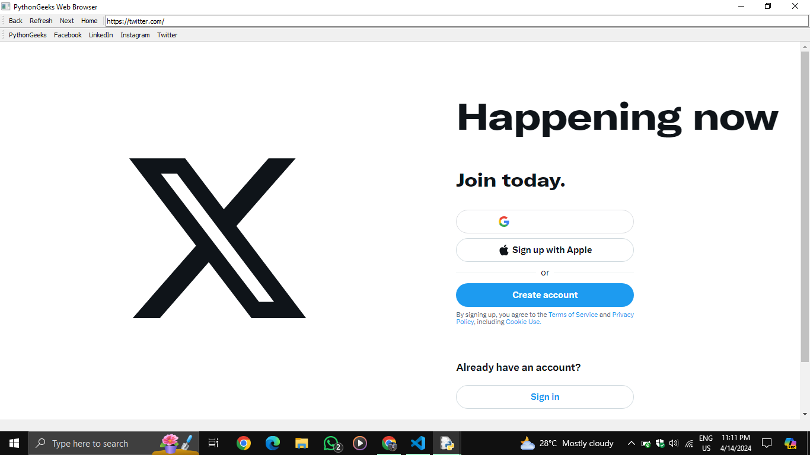
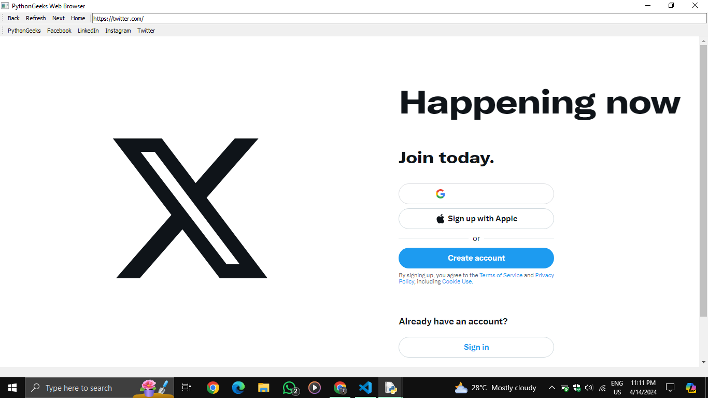

A web browser is a software application that allows users to access and navigate the internet. Common web browsers include Google Chrome, Microsoft Edge, Brave, Firefox, and Safari.
This project is a GUI-based Web Browser developed using Python and PyQt5. It leverages the WebEngineWidgets module for rendering web pages.
Project Prerequisites: